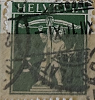
| SOURCE | TITLE| IMAGE MATCH | click to source page |
| eBay | 1923 China Sc#264 USED Reaping rice! | eBay | 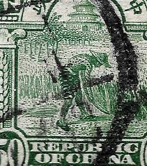 |
| Collection Hero | Rare And Collectible Stamps : Stamp Voyage Value Guide - Price List | stamp Collectors Guide | 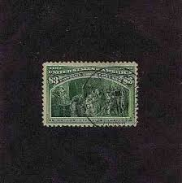 |
| eBay | St Kitts & Nevis Stamps (1983-Now) for sale | eBay | 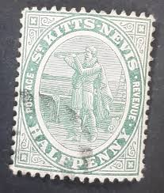 |
| The Royal Philatelic Society London | Stamps of the British Empire issued during the reign of King Edward VII | 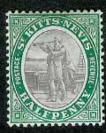 |
| Todocolección | luzern suiza 1951 circulada a saanen - Buy Antique stamps of Switzerland on todocoleccion | 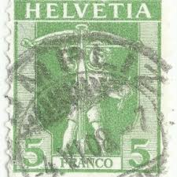 |
| Empirephilatelists.com | St Kitts Nevis 1905 1/2d Dull Purple & Deep Green SG11 Fine MNH|King Edward VII Stamps | 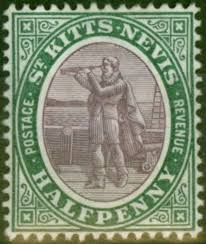 |
| eBay | Switzerland 40 used catalog $90.00 | eBay | 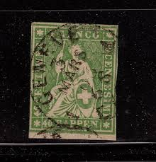 |
| Mystic Stamp | 11-12a - 1905-16 St. Kitts-Nevis - Mystic Stamp Company | 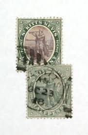 |
| HipStamp | Barbados #103 1906 1/2p Lord Nelson Monument Used F-Vf P | Caribbean - Barbados, General Issue Stamp / HipStamp | 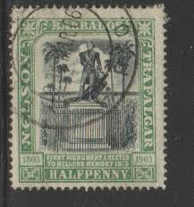 |
| Tumblr | Silent Ambassadors | Like much of the West Indies, St. Kitts and Nevis... | 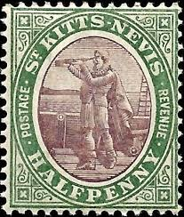 |
| WordPress.com | Portugal #639 (1944) – A Stamp A Day | 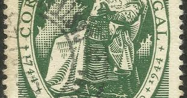 |
| HipStamp | Cuba 1899- Over 137 Years OLD Stamps-Famous People Used- Very Fine | Caribbean - Cuba, Stamp / HipStamp | 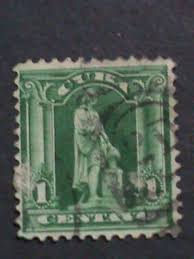 |
| eBay | SWITZERLAND 1930 5/7½(C) DEFINITIVE ISSUES SURCHARGED USED PAIR (F) | eBay | 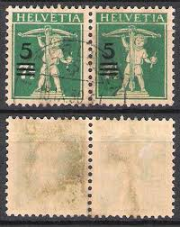 |
| Stamp Community Forum | 1898 Commerce Stamps Imperf. Vert. Pairs? Please Help ID - Stamp Community Forum | 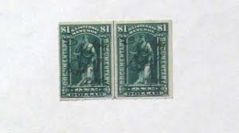 |
| Etsy | Lance Milliner Needles - Multiple Sizes - 25 PACK - Hat Making, Pleating - Etsy | 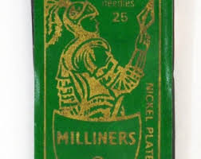 |
| A few Swiss stamps from my collection | 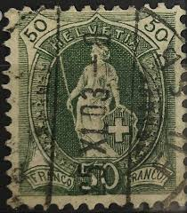 | |
| eBay | Switzerland 1882 Helvetia 25c MC: 59 Green Used Stamp Lightly Hinged (a2) | eBay | 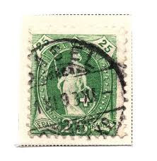 |
| Miraheze | Bavaria - Stamp Encyclopedia | 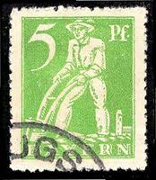 |
| eBay | Captain Marryat MR MIDSHIPMAN EASY Grosset & Dunlap c. 1928 by unknown | eBay | 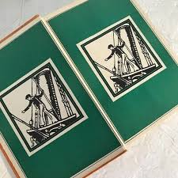 |
| stampmall.com.au | Album Caribbean – Stamp Mall | 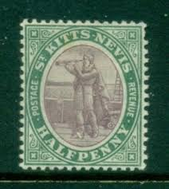 |
| Invaluable.com | Sold at Auction: US Horse Blanket Notes, 1914 $5 1917 1923 $1 (3pc) | 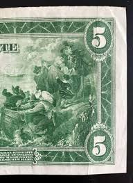 |
| pixels.com | Irish Postage Stamp #10 by James Hill | 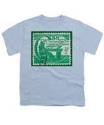 |
| This is the 2nd of Sundays multi's thats now open for bidding and its a $1 reserve WORLDWIDE with some nice lots within. There will be 1 more $2 reserve multi's for | 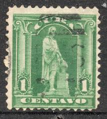 | |
| eBay | YUGOSLAVIA 1LB3 - VERY RARE USED - WAR VICTIMS FUND "WOUNDED SOLDIER" | eBay | 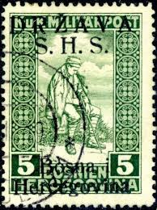 |
| eBay | RARE HERKIMER GENERALS FELT PENNANT 17.5" {MC484} | eBay | 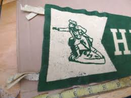 |
| Janssen Stamps | Janssen Stamps - Stamps - German Reich 1871-1932 | 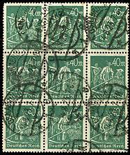 |
| Amazon Web Services (AWS) | Untitled | 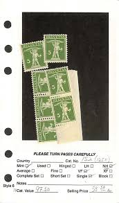 |
| WordPress.com | Honduras #68 (1892) – A Stamp A Day | 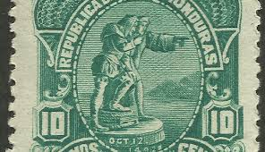 |
| eBay | Stamp Germany Bavaria Deutsches Reich Bayern 10 Mark 1921 Mi. Nr. 137 (23975) | eBay | 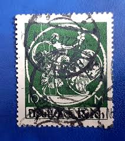 |
| eBay UK | 1 Block Width Kittitian & Nevisian Stamps (Pre - 1983) for sale | eBay UK | 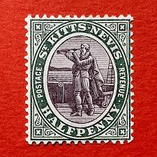 |
| Todocolección | st kitts nevis 1905-1918 - half penny - yvert n - Buy Stamps from other American countries on todocoleccion | 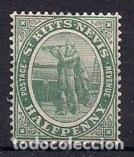 |
| eBay | MOMEN: US STAMPS #227 PLATE BLOCK OF 10 MINT OG 8NH/2LH LOT #92724 | eBay | 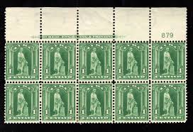 |
| eBay | Photographic Helvetia / Switzerland Obliterated No. 86 Postal Union | eBay | 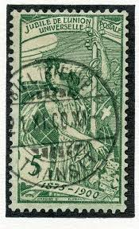 |
| eBay | Switzerland Scott 109 (1905) Used G, CV $16.00 C | eBay | 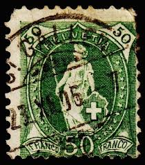 |
| eBay | Bavaria - Germany, Postage Stamp, #238 Used, 1920 (AB) | eBay | 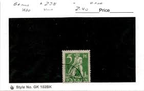 |
| eBay | Dr Mi.nr. 244 C Postmarked Real & Flawless, Photo Certificate 2025 (Mi | eBay | 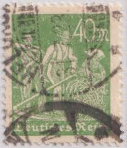 |
| eBay | 1951-1960 Year of Issue US Postal Stamp Plate Blocks & Multiples for sale | eBay | 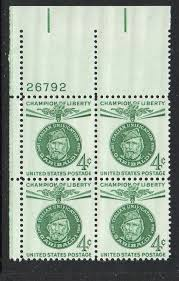 |
| eBay | German Historical Figures German & Colonies Stamp Blocks for sale | eBay | 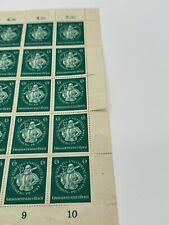 |
| eBay | Album Schätze St. Scott # 11-12a 1/2p Columbus Looking für Land MH | eBay | 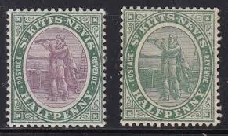 |
| What is the value of a 3 cent stamp with a C grill? | 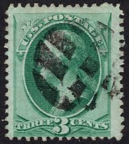 | |
| Colnect | Switzerland : Stamps [Year: 1888 | Format: Stamp] [1/2] : Colnect 📮 | 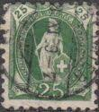 |
| eBay | Switzerland Scott # 157a VF Used 1911 5 Cent William Tell's Son Tête-bêche | eBay | 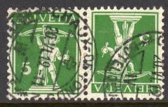 |
| eBay | SWITZERLAND SCOTT # 83, USED, FINE, GREAT PRICE! | eBay | 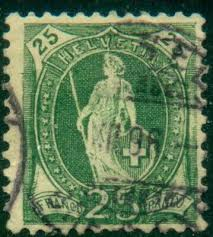 |
| eBay | 1857 Italian State Tuscany used 4cr stamp #14 Lion of Tuscany; CV $225.00 | eBay | 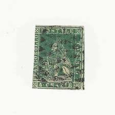 |
| The Itty Bitty Stamp Company | Switzerland Scott #96a Used – The Itty Bitty Stamp Company | 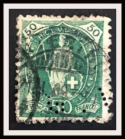 |
| Colnect | Germany, Democratic Republic (DDR) : Stamps [Year: 1974] [1/15] : Colnect 📮 | 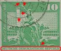 |
| The Royal Philatelic Society London | BWISC 60th Anniversary Display at RPSL, November 2014 | 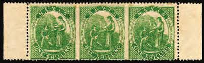 |
| eBay | Helvetia Stamp | eBay | 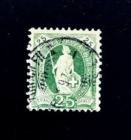 |
| WordPress.com | Trinidad and Tobago #1 (1913) – A Stamp A Day | 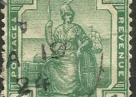 |
| eBay | 1897-1904 Switzerland Sc# 83b - 25¢ Helvetia - Used postage stamp. Cv$7.75 | eBay | |
| JFK Library | Who Was Rose Kennedy | |
| PicClick UK | MALTA SG35 1899 10/= BLUE-BLACK USED (r) £48.00 - PicClick UK | |
| eBay | Switzerland Sc 122 & #96 used. 1907 40,50c Standing Helvetia on granite | eBay | |
| eBay | First Day of Issue 1 Cent Politicians United States Stamps for sale | eBay | |
| Blogger.com | Crete Stamps Postmarks Postal History | |
| eBay | Green Russian & Soviet Union 1951-1960 Year of Issue Stamps for sale | eBay | |
| eBay | Antique 1909 Child Reading A Little Book Worm Postcard Swiss Cancel | eBay | |
| eBay | US Ducks Stamp Plate Blocks for sale | eBay | |
| eBay | Silver Jubilee Foreign 1/2 Half Penny Green Stamp Used - #A194 | eBay | |
| HipStamp | Precancel - Galesburg, IL PSS 899-71 - Bureau Issue | United States, Stamp / HipStamp |